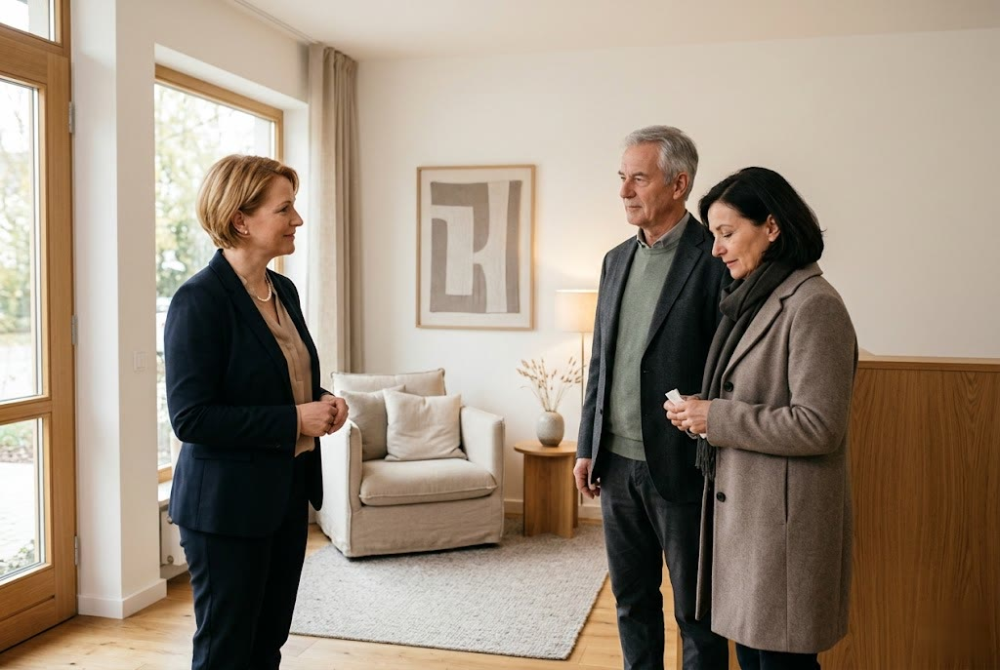

Das Bestattungshaus · Singen am Hohentwiel Pietät Decker
Glaube, Liebe, Hoffnung · seit über 60 Jahren an Ihrer Seite
Würdevolle Diskretion, Einfühlungsvermögen und Fachkunde im Trauerfall.
07731 99 68 0 Soforthilfe im Trauerfall · jetzt anrufenWir sind Tag und Nacht für Sie da · auch am Wochenende und an Feiertagen.
Ein Sterbefall ist eingetreten? Rufen Sie uns an · wir kümmern uns um alles Weitere.
07731 99 68 0Glaube, Liebe, Hoffnung · drei Worte, die verpflichten.
Der Situation eines Todesfalles stehen die Menschen meist etwas hilflos gegenüber. Irgendwann sind wir alle einmal betroffen, und es ist gut, auf diesen Fall ein wenig vorbereitet zu sein. Wir können und wollen Ihnen helfen, mit dieser Situation umzugehen und das Unabweisliche erträglicher zu machen.
Würdevolle Diskretion, Einfühlungsvermögen, Fachkunde und Zuverlässigkeit sind für uns nicht nur berufliche Verpflichtung, sondern ein echtes Anliegen. Dieser Grundsatz gilt in unserem Haus seit mehr als 60 Jahren.
Setzen Sie Ihr Vertrauen in uns persönlich und in unsere Dienstleistungen.
Sandra Gäng-Decker und Team
Mehr über unser HausEigene Abschiedsräume · für eine Verabschiedung in Ruhe.
Zur Trauerbewältigung ist es für die Angehörigen wichtig, vom Verstorbenen würdevoll Abschied zu nehmen. Unsere würdevoll gestalteten Abschiedsräume ermöglichen eine individuelle Verabschiedung, unabhängig von den Besuchszeiten öffentlicher Friedhofshallen.
Die private Sphäre der Familie und der Verstorbenen ist dabei gewahrt. Damit sind wir das einzige Bestattungsunternehmen in unserer Region, das diese Einrichtung bieten kann · für alle Angehörigen, unabhängig von Wohnort, Sterbeort oder Bestattungsort.
Unsere Leistungen im Überblick
Ein Familienbetrieb mit langer Geschichte.
Was Willy und Rosl Decker kurz nach dem Krieg begannen, führen wir bis heute weiter: verlässlich an der Seite der Menschen im Hegau zu stehen.
Der Anfang
Willy und Rosl Decker erkannten den Bedarf, Verstorbene zu überführen und deren Bestattung zu übernehmen. Aus der Firma Taxi.Decker entstand so das Bestattungsinstitut.
Erstes Markenzeichen der Region
Als erstes Unternehmen in der Region erlangte Pietät Decker die Berechtigung, das geschützte Markenzeichen für die fachliche Qualifikation im Bestattungswesen zu führen.
Das Haus an der Schaffhauser Straße
Im September 1984 bezog das Unternehmen als „Das Bestattungshaus" den repräsentativen Neubau in der Schaffhauser Straße 98 · bis heute unser Stammsitz.
Die dritte Generation
Sandra Gäng-Decker übernahm zum 1. Januar 2009 die Geschäftsführung. Im selben Jahr blickte die Firma auf 60 Jahre Geschichte zurück und ließ sich nach ISO Norm 9001 zertifizieren.
Tag und Nacht erreichbar · auch am Wochenende und an Feiertagen.
07731 99 68 0Rufen Sie an, wann immer Sie uns brauchen. Im Trauerfall sind wir sofort für Sie da.
- Adresse Das Bestattungshaus Pietät Decker · Schaffhauser Straße 98 · 78224 Singen
- Telefax 07731 99 68 25
- E-Mail info@decker-bestattungen.de
- Büroöffnungszeiten Montag bis Freitag · 8.00 bis 12.00 Uhr und 13.15 bis 17.00 Uhr · am Wochenende und an Feiertagen nach Vereinbarung
-
Zweigstellen
Rielasingen.Worblingen · Hegaustr. 48 · 78239 Rielasingen · 07731 99 68 0
Mühlhausen.Ehingen · 07733 28 08 · Termine nach Vereinbarung
Anfahrt: Schaffhauser Straße 98 · 78224 Singen, am Krankenhaus vorbei Richtung Ortsausgang.
Route mit Google Maps planenSchreiben Sie uns
Wir melden uns zeitnah bei Ihnen · in dringenden Fällen rufen Sie bitte direkt an.